Матеріали Дентсплай · журнал «ДентАрт» 2015 №3
Значні деструкції: кіста, гранулема, кістогранулема?
LARGE PERIODONTAL DESTRUCTIONS: CYST, GRANULOMA, CYSTOGRANULOMA?
Маю честь поділитися з шановними колегами кількома цікавими і повчальними прикладами з власної клінічної практики.
На нинішньому етапі розвитку сучасної ендодонтії ми не маємо методики, яка б дозволяла провести достовірну диференціацію між кістою і гранулемою в клініці. Зазвичай діагноз «кіста» лікарі ставлять на основі аналізу рентгенограми. Насправді ж це можна зробити лише за даними гістологічного дослідження зрізів, отриманих після остеоектомії кісткового блоку, що є неприйнятним у клінічній практиці. Як свідчать різні дослідження, частота утворення апікальних кіст серед усіх апікальних уражень варіює від 6% до 55% (з 256 випадків 9% справжніх і 6% застійних кіст), причому гістологічні дослідження проводилися лише під час оперативних втручань (15% неуспіху ендодонтичного методу лікування).
На жаль, сьогодні ми не знаємо чіткого генезису і механізму виникнення кіст. Серед найбільш популярних теорій — генетична, імунологічна, теорія дефіциту кровопостачання, теорія абсцесу тощо. Коротко патогенез виникнення деструкції полягає ось у чому. У відповідь на роздратування антигенами (ендотоксинами) періапікальної ділянки через систему макрофагів організм активує остеокласти. Недостатньо васкуляризована, бідна на фактори захисту кісткова тканина резорбується і заміщується на багаті судинами грануляційні тканини, які й захищають макроорганізм від подальшого поширення інфекції. Ті ж самі фактори, що активують остеокласти, активують виділення в зоні ураження факторів росту. Можна припустити, що при формуванні апікальної кісти проліферуючі епітеліальні тяжі зливаються, утворюючи кулясту масу. Тканини всередині неї, в основному волокниста сполучна, а також клітини запалення поступово дегенерують через втрату кровопостачання. Так формується порожнина кісти. Плоский епітелій кісти може виступати як фізіологічний бар'єр між внутріканальною інфекцією і порожниною кісти, не допускаючи проникнення в навколишню кісткову тканину. Більшість медіаторів запалення і прозапальних цитокінів, що стимулюють проліферацію епітелію, стимулюють кісткову резорбцію при запальному апікальному ураженні.1
Відомо, що після розпаду епітеліального тяжа Гертвіга в перірадикулярних тканинах залишаються острівці епітеліальних тканин — острівці Маляссе. Проростанням саме активованих цитокінами епітеліальних клітин часто пояснюється формування справжньої кісти. Слід згадати також дослідження Зельтцер/Zeltzer, в якому стверджується, що у проліферації епітелію пусковим моментом, крім реакції запалення, може бути і виведення за верхівку ендодонтичного інструменту або обтураційного матеріалу.
Оскільки на практиці поставлений діагноз (кіста або гранулема) залишається непідтвердженим гістологічно, лікування періапікальних деструкцій варто почати з консервативних методів ендодонтичного лікування. За даними дослідження Наїр/Nair, в якому проаналізовано близько 1200 випадків лікування, відсоток успіху при проведенні адекватного ендодонтичного лікування становить близько 85%. Цікаво, що з 15 відсотків неуспіху, гістологічно доведено, у 85% випадків мали місце грануляції, а в 15% — справді кісти (приблизно порівну мішкуваті і справжні). Хоча в прогнозі лікування це не має великого значення — за умови, що кіста одонтогенна. Лише за відсутності позитивних результатів після адекватно проведеного лікування показані хірургічні операції у ротовій порожнині.
«.... Більшість періапікальних уражень, за винятком справжніх радикулярних кіст, гояться після належного ортоградного ендодонтичного лікування. Як тільки причина видалена шляхом хемомеханічної обробки і канал повністю герметичний, усі клітинні компоненти, які брали участь у запальній реакції, поступово зникають. У процесі регресії більшість клітин запалення, а також деякі ендотеліальні клітини та фібробласти стають непотрібними і знищуються в процесі апоптозу (запрограмована клітинна смерть) і меншою мірою некрозом клітин»2 (див. Схему процесу загоєння).
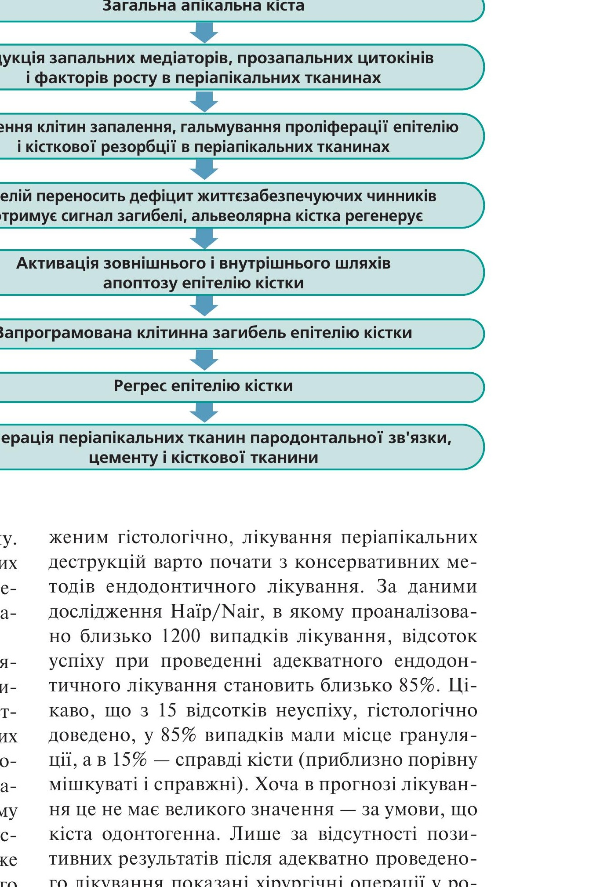
Схема процесу загоєння: загальна апікальна кіста → редукція запальних медіаторів, прозапальних цитокінів і факторів росту в періапікальних тканинах → зникнення клітин запалення, гальмування проліферації епітелію і кісткової резорбції в періапікальних тканинах → епітелій переносить дефіцит життєзабезпечуючих чинників і отримує сигнал загибелі, альвеолярна кістка регенерує → активація зовнішнього і внутрішнього шляхів апоптозу епітелію кістки → запрограмована клітинна загибель епітелію кістки → регрес епітелію кістки → регенерація періапікальних тканин пародонтальної зв'язки, цементу і кісткової тканини.
На підтвердження цих тез у статті наведено кілька клінічних прикладів.
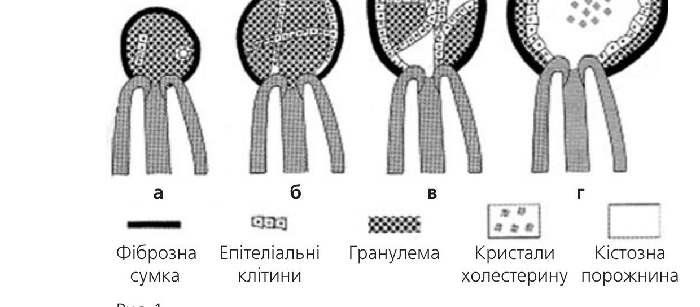
Рис. 1. а — фіброзна сумка; б — епітеліальні клітини; в — гранулема; г — кристали холестерину, кістозна порожнина.
Клінічний випадок 1
Жінка 67 років, діагноз — ендоперіодонтальне ураження зуба 32. Після поетапного ендодонтичного лікування — формування каналу, іригація, обтурація — виконана реставрація зуба. Результат — повне клінічне одужання, підтверджене рентгенологічно.
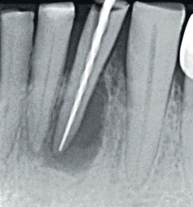
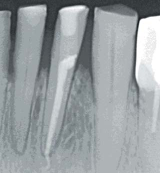
Клінічний випадок 2
Дитина 12 років була направлена з діагнозом: кіста зуба 22.
Об'єктивно: деструктивні зміни не лише визначаються на прицільній рентгенограмі, а й очевидні при огляді порожнини рота. Кістозне утворення викликало дивергенцію коренів зубів 22, 23. Після формування магістрального каналу (кінцевий файл ПроТейпер/ProTaper F1 020 7%) під час активації іриганту — 5% розчину гіпохлориту натрію — отримані прожилки крові, що дало підставу лікареві припустити наявність грануляційних тканин. Враховуючи, що зуб був адекватно відреставрований, імовірно, ми маємо справу з первинною інфекцією (грамнегативна анаеробна поліморфна мікрофлора). Після обтурації (одноетапний метод лікування) пацієнт викликаний для контрольного огляду рівно через 6 місяців. Повне одужання.
Оскільки в наш час є можливість проводити конусно-променеву комп'ютерну томографію (КЛКТ), демонструються скриншоти цього клінічного випадку.
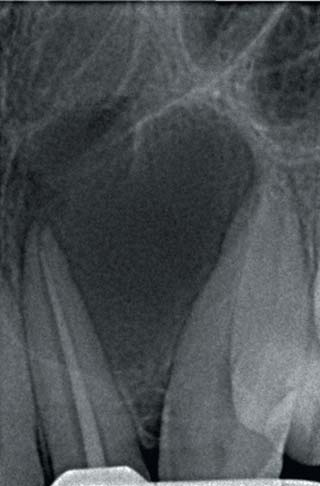
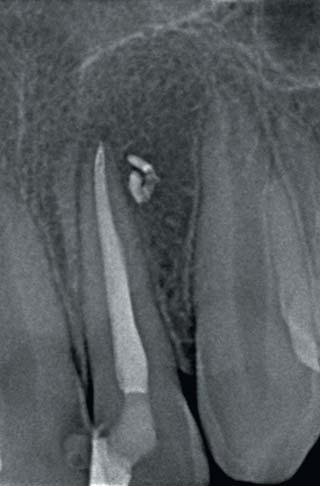
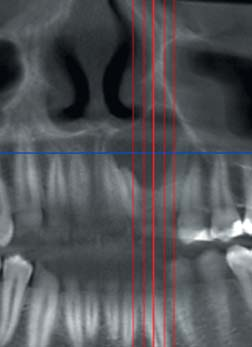
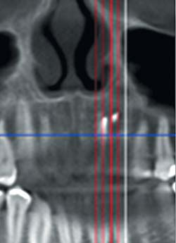
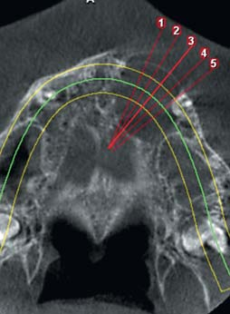
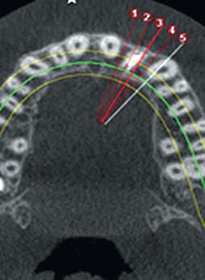
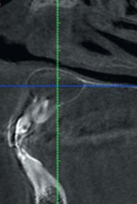
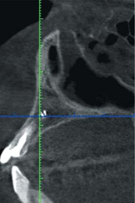
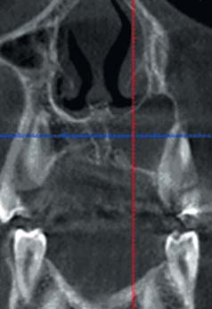
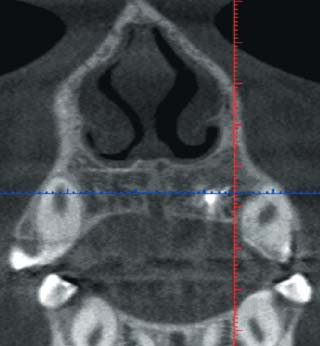
Клінічний випадок 3
Пацієнт 55 років направлений на лікування з діагнозом: кіста правої верхньої щелепи. Анамнез: раніше, до прийому, вже були депульповані зуб 13 і зуб 11, що, на наш погляд, є надмірним втручанням.
Об'єктивно: зуби 11, 12, 13 під тимчасовими пов'язками. Після аналізу даних конусно-променевої комп'ютерної томографії виявлено деструктивні зміни в ділянці правої верхньої щелепи з випинанням у порожнину носа, у верхньощелепну пазуху і у бік піднебіння. Визначається чіткий симптом Рунге-Дюпюітрена (ригідність окістя), «проростання» у верхню ліву щелепу.
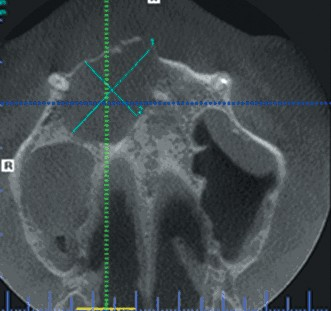
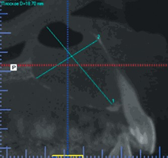
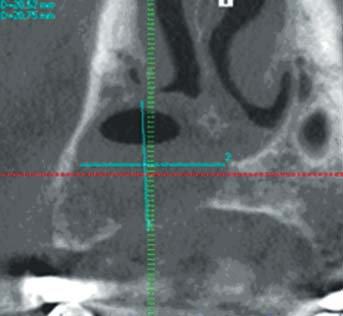
Ендодонтичне доліковування зубів 13, 11 труднощів не становило — були виконані формування каналу, іригація, обтурація, проведена реставрація. Під час маніпуляцій з причинним зубом 22 зіткнулися з резорбцією верхівки (апікальна констрикція понад 060) і постійним виділенням серозного жовтуватого ексудату. Через це провадилася не лише іригація магістрального кореневого каналу, а й промивання кістозної порожнини. На одному з етапів при необережній роботі пустером було виведене повітря в порожнину деструкції, що й ілюструють дані комп'ютерної томографії.
Тимчасова обтурація гідроксидом кальцію виявилася неефективною. Було виконано кілька сеансів повторної обтурації гідроокису кальцію, однак ексудація не припинялася. Оскільки, згідно з канонами сучасної ендодонтії, канал, який неможливо висушити, не можна обтурувати, склалася, здавалося б, безвихідна ситуація. Але лікар обтурував «вологий» магістральний канал виведенням силера за верхівку.
Наступного дня канал розпломбували, не доходячи 0,5 мм до робочої довжини, проведено повноцінну іригацію з використанням ЕДТА і 5% розчину гіпохлориту натрію. Класична обтурація методом вертикальної термоконденсації гутаперчі, силер Ейч-Плюс/AH-Plus. Через 2 роки визначається повне заміщення дефекту кістковою тканиною. Звичайно, якщо порівнювати з колатеральними знімками лівої щелепи, кісткові трабекули не мають упорядкованої структури, однак при таких великих деструктивних змінах наївно очікувати регенерації до нативної на вигляд кістки. Остеопластичний матеріал лише поліпшує рентгенологічну якість кістки.
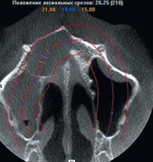
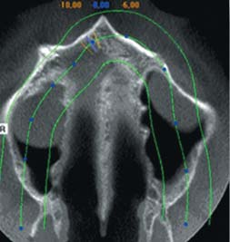
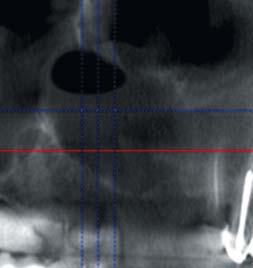
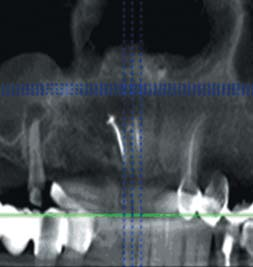
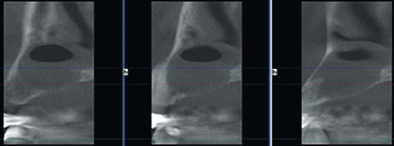
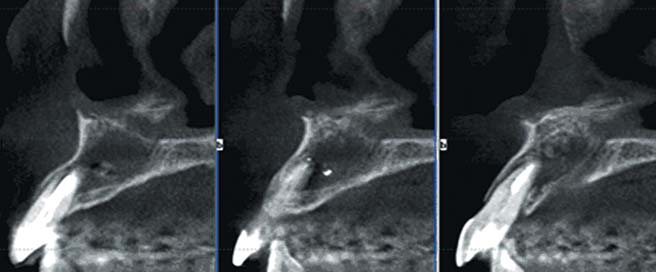
Сучасні матеріали для кісткової пластики, які часто використовуються при хірургічних методах лікування періапікальних уражень, не дають нам підстав вважати, що утворюється повноцінна кісткова тканина. На підтвердження цього демонструється рентгенограма після операцій резекції верхівки кореня із заміщенням дефектів кореня кістковопластичним матеріалом Біо-осс/Bio-oss. Результат через 3 роки після операції: рентгенологічна якість кістки поліпшилася, але, як ми бачимо на рентгенограмі, кістка повністю не відновилася — чітко проглядаються гранули кістковопластичного матеріалу. Доцільніше вести мову про поліпшення умов для імплантації, а не про поліпшення якості кістки.
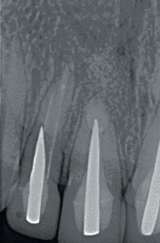
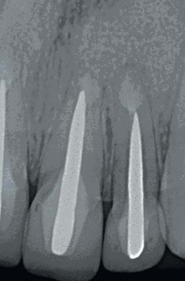
Клінічний випадок 4
Чоловік 28 років. Анамнез: попередній лікар поставив діагноз — «кіста лівої верхньої щелепи». Пацієнтові було запропоновано видалення зубів 26, 27 з подальшою аугментацією кістковопластичним матеріалом та імплантацією. При обсязі деструкції до 10 см³ матеріальні витрати, яких мав зазнати пацієнт, високі, а користь цієї процедури сумнівна. Об'єктивно: зуб 27 інтактний. Після зняття реставрації із зуба 26 у ділянці фуркації було виявлено перфорацію близько 3-4 мм у діаметрі. Складність випадку полягала знову ж у безперервній ексудації серозного ексудату; дані лабораторного аналізу вмісту — поліморфоядерні нейтрофіли і кокова флора.
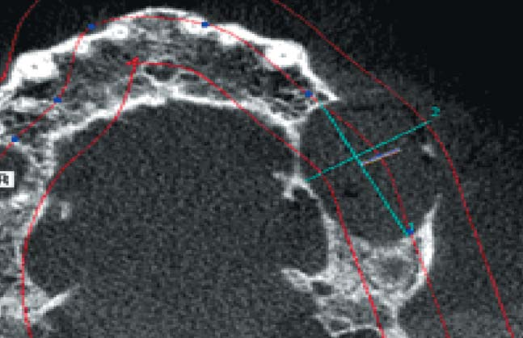
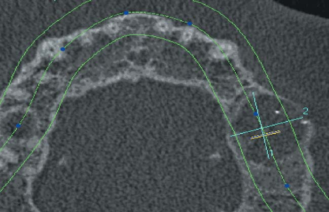
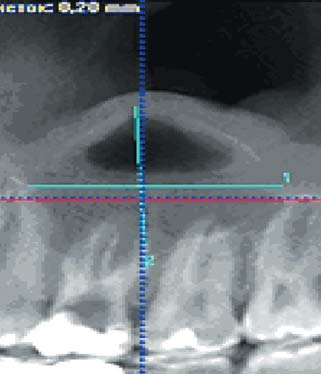
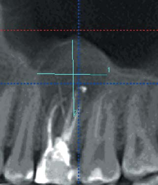
Оскільки з пошуком вирішення цієї проблеми (зупинка ексудату) автор зіткнувся не вперше, після трансрадикулярного промивання кістозної порожнини гіпохлоритом натрію у проміжок деструкції вирішено ввести близько 6 мл атропіну сульфату 0,1%. Цей препарат використовується у загальній хірургії для премедикації пацієнта з метою зниження секреції слини. Введення атропіну сульфату в порожнину кісти не могло завдати шкоди пацієнтові (максимально можливе ускладнення — сухість у роті). Після 5 хв експозиції розчину ексудація тимчасово припинилася, що дало можливість, за рекомендацією Дж. Кемпа, ввести через перфорацію гемігідрат сульфату кальцію (гіпс), замішаний на фізіологічному розчині для прискорення кристалізації.
Використавши гіпс як зарадикулярну матрицю, після кристалізації останнього провели препарування порожнини з метою очищення від залишків гіпсу із закриттям перфорації препаратом ПроРут МТА/ProRoot MTA, Дентсплай Майлліфер/Dentsply Maillefer. Одночасно проведено ревізію системи кореневих каналів інструментами ПроТейпер Некст/ProTaper Next, Дентсплай Майлліфер, які зберігають анатомію кореневих каналів. У більшості випадків, включаючи складні ситуації, я використовую лише два перших інструменти (X1, X2). Обтурація проведена методом вертикальної термоконденсації гутаперчі Гутта Кор/Gutta Core, Дентсплай Майлліфер. Гутта Кор — прорив у питанні обтурації кореневих каналів: це легке видалення коронкової порції матеріалу для установки штифта і вельми легке повне видалення кореневої пломби з метою ревізії каналу. Із системою Гутта Кор обтурація широких щічно-лінгвальних і S-подібних каналів сьогодні стала простою. Можна бути впевненим у тому, що найвищий рівень обтурації кореневих каналів буде досягнутий.
Через півроку пацієнт виявив бажання провести контрольну КЛКТ. При оцінці її результатів виявлено зменшення обсягу деструкції приблизно втричі — до 3 см³. Моніторинг цього випадку триває і далі. У клінічній практиці автор ще неодноразово використовував атропіну сульфат 0,1% для зупинки ексудації. У переважній кількості випадків це дозволяло призупинити ексудацію.
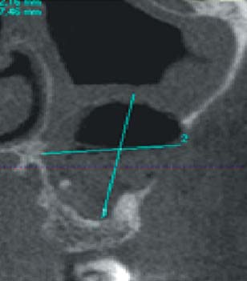
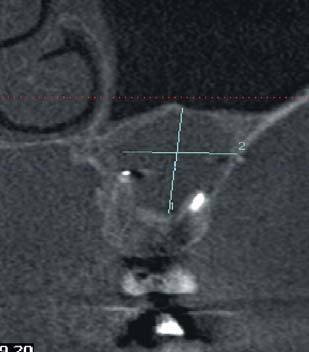
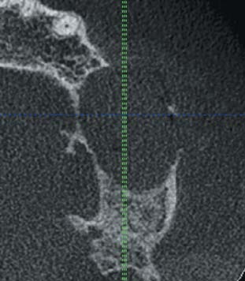
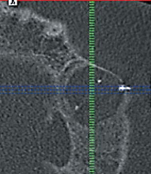
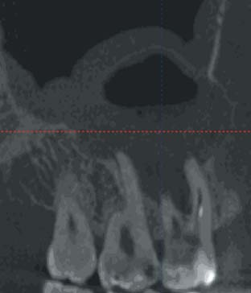
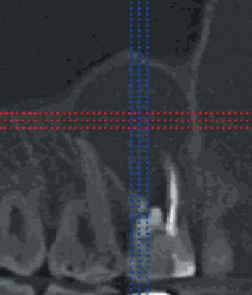
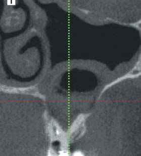
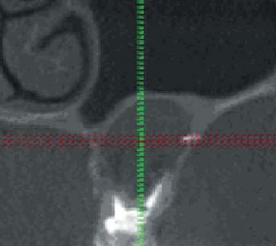
Клінічний випадок 5
До нас звернулася колега-стоматолог. Результат роботи через 2,5 року — «аугментація». Зверніть увагу на стан гайморової пазухи до лікування і на цей момент.
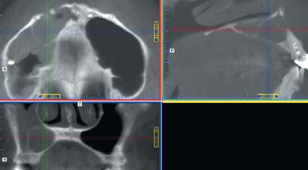
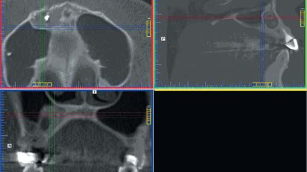
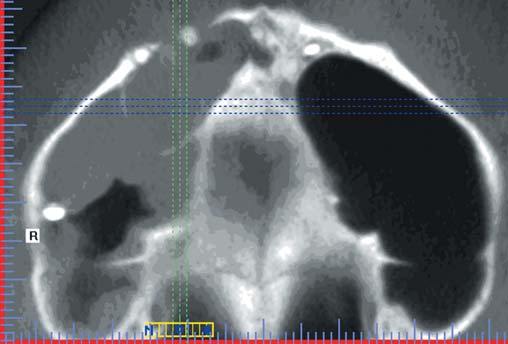
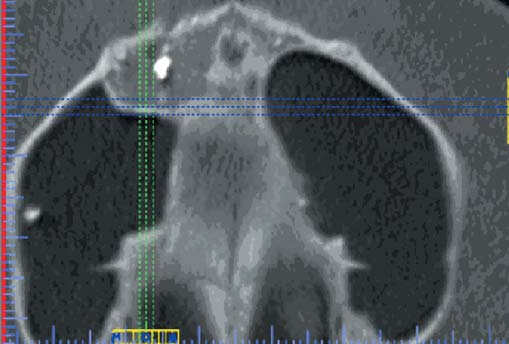
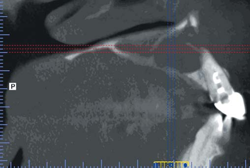
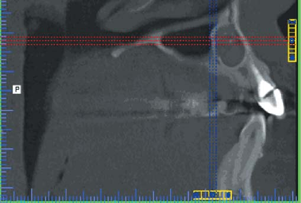
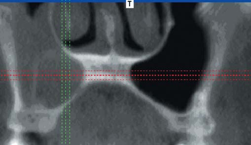
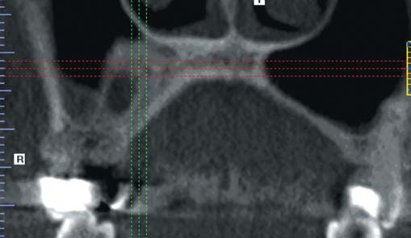
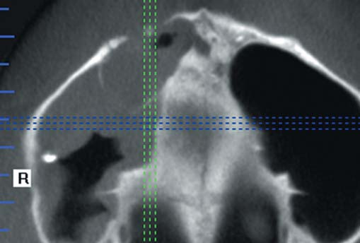
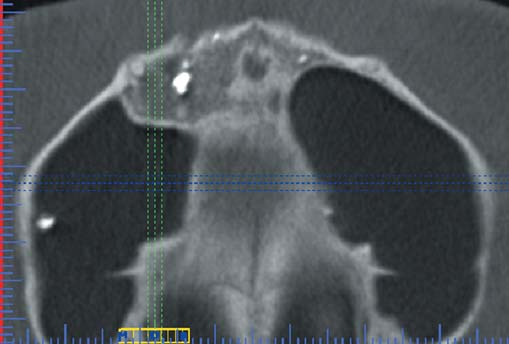
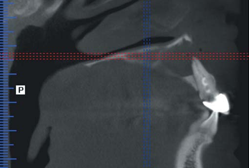
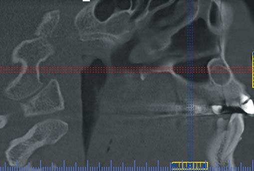
Може скластися враження, що у автора все виходить і він має 100% успіх. Це далеко не так. У клінічній практиці бувають і безуспішні випадки, однак у розпорядженні клініциста завжди є альтернативний шлях або свого роду шлях до відступу — проведення апікальної хірургії. Тому не слід боятися великих деструкцій. Як кажуть, не такий страшний чорт, як його малюють.
Література
- Louis M. Lin, Gteorge T-J. Huang and Paul A. Rosenberg. Proliferation of epithelial cell rests, formation of apical cysts, and regression of apical cysts after periapical wound healing. JOE. – Volum 33, Numbtr 8, August 2007.